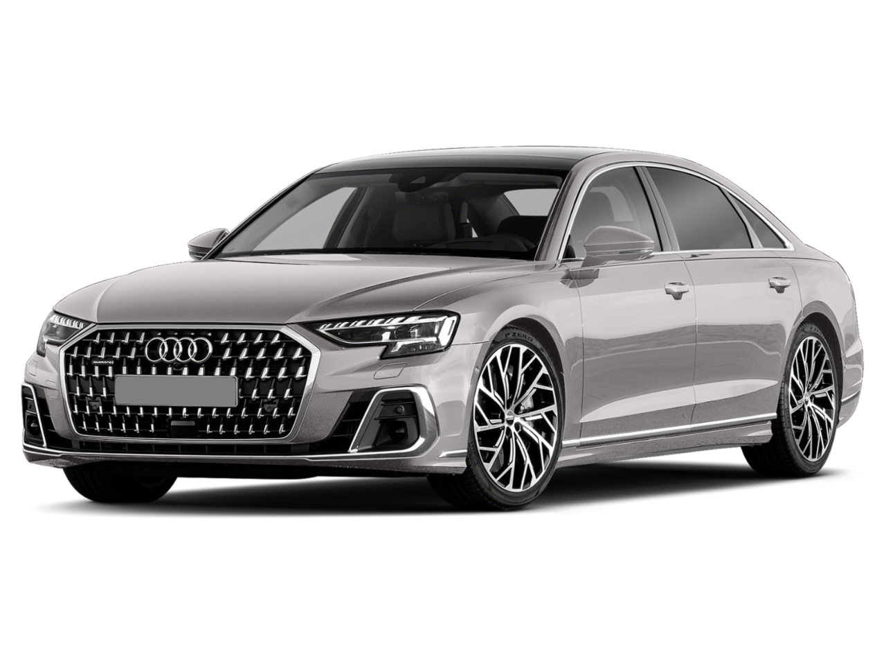

Available Models

A8 V6
335 hp/369 lb-ft of torque
3.0-liter TFSI V6
quattro all-wheel drive
The 2019 Audi A8 epitomizes luxury and sophistication in the automotive world. This flagship sedan boasts sleek lines, refined details, and cutting-edge technology that elevate it to the upper echelons of the luxury car market.
335 hp/369 lb-ft of torque
3.0-liter TFSI V6
quattro all-wheel drive
We have a history of taking lighting to new dimensions. in the all new Audi A8, the sculptural shapes of the headlights and taillights elicit a closer look